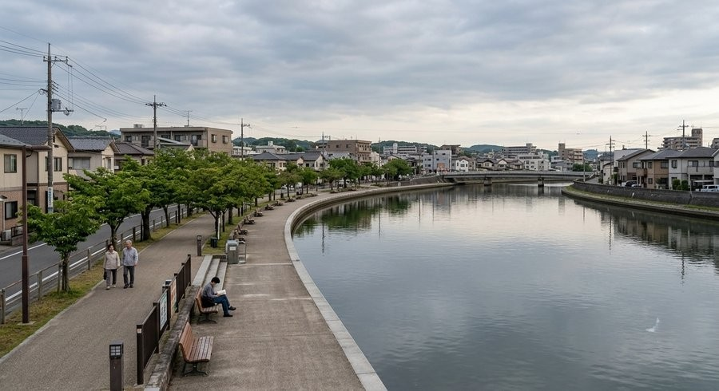
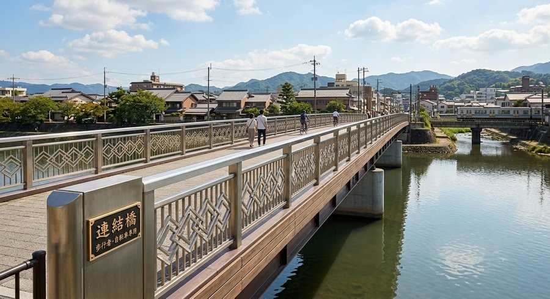
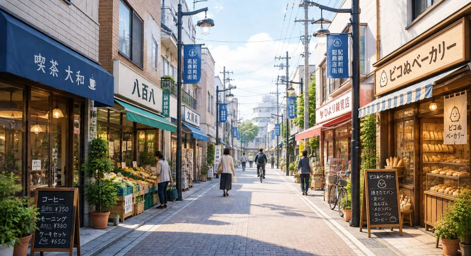

ピコぬ市の中心部、記録町からぬかピコ川沿いにかけては、徒歩と連結バスで 半日ほどかけて巡れる散策コースになっています。特別な観光施設が続くわけでは ありませんが、市の成り立ちである「連結」と「記録」の空気を、歩きながら 感じていただけるコースです。市内で配布しているチラシ「ピコぬ市半日お散歩コース」 でも同じコースをご紹介しています。
チラシ「ピコぬ市半日お散歩コース」(PDF)をダウンロード >
9:30 ピコぬ中央駅 → 10:25 ぬかピコ民芸博物館 → 11:45 ぬかピコ川沿いの遊歩道 → 13:30 記録町の商店街 → 15:45 クリニック ぬかピコテラス
9:30 ピコぬ中央駅
ピコぬ市の玄関口です。連結列車や連結バスが集まる駅で、ここから半日コースが 始まります。ゆっくり深呼吸して、のんびり歩きに出かけましょう。
| 所在地 | ピコぬ市中央1丁目1-1 |
|---|---|
| 電話 | ぬぬ-ぬかピコ-6789 |
| 営業 | 始発〜終電まで(定休日なし) |
| 滞在時間 | 10分ほど |
10:25 ぬかピコ民芸博物館

市の「記録する文化」を紹介する博物館です。旧寺院を転用した瓦屋根の建物で、 春は桜、夏は森林浴、秋はもみじなど、庭の四季も地元の人に人気です。 詳しくは施設ページをご覧ください。
| 所在地 | ピコぬ市記録町1丁目5 |
|---|---|
| 電話 | ぬぬ-ぬかピコ-3055 |
| 開館時間 | 9:00〜17:00(休館日:月曜日) |
| 滞在時間 | 60分ほど |
11:45 ぬかピコ川沿いの遊歩道

博物館から少し歩くと、気持ちのいい遊歩道が続きます。ベンチに座って、 川面を眺めながらお弁当を食べるのにぴったりの時間です。
| 所在地 | ぬかピコ川沿い |
|---|---|
| 開放時間 | 常時開放(定休日なし) |
| 滞在時間 | 30分ほど |
13:30 記録町の商店街

歩行者・自転車専用の「連結橋」を渡ると、レトロな商店街に入ります。 橋の欄干には、市の連結技術をモチーフにした幾何学模様があしらわれています。

文房具店や喫茶店など、観光向けではない、地元の生活に根づいた店構えが 続きます。喫茶大和さんの手作りケーキとサイフォンコーヒーは、ひと息つくのに おすすめです。
| 所在地 | ピコぬ市記録町3丁目 |
|---|---|
| 営業 | 各店舗にお問い合わせください |
| 定休日 | 水曜日(店舗により異なります) |
| 滞在時間 | 45分ほど |
加盟店の詳しい紹介は記録町商店街 加盟店紹介のページ (商店街だより)をご覧ください。
15:45 クリニック ぬかピコテラス
コースの終点は、キロクぬかクリニック併設の「ぬかピコテラス」です。記録珈琲や 余白プリンをお供に、今日見つけたものをノートに記録して、ひとやすみしましょう。
| 所在地 | ピコぬ市記録町4丁目3-2 |
|---|---|
| 電話 | ぬぬ-ぬかピコ-6789 |
| 営業時間 | 10:00〜17:00(定休日:木曜日) |
| 滞在時間 | 30分ほど |
クリニックすぐ近くのバス停から連結バスで「ピコぬ中央駅」まで約15分で戻れます。
もう少し足を伸ばせる方へ
時間に余裕があれば、記録町の商店街から市立図書館まで、あわせて立ち寄る こともできます(チラシのコースには含まれていませんが、商店街から 徒歩圏内です)。旧小学校の校舎を活用した図書館で、時計塔が今も現役で 稼働しています。詳しくは施設ページを ご覧ください。